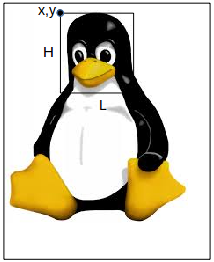

Processing permet de travailler sur les images.
À faire vous-même 7.1
Vous devez commencer par télécharger l'image tux.jpg. Saisissez le code se trouvant ci-dessous. Enregistrez (Fichier -> Enregistrer) votre travail. Placez le fichier "tux.jpg" dans le même dossier que le fichier (xxxx.pyde) que vous venez d'enregistrer. Testez votre programme.
{kind=link}
def setup():
size (300,300)
img=loadImage("tux.jpg")
image (img,0,0)
def draw():
pass
Analysons ce code :
img=loadImage("tux.jpg")
nous chargeons l'image "tux.jpg" et plaçons cette image dans la variable "img" (nous déclarons cette variable "global" afin de pouvoir l'utiliser dans la fonction "draw").
image (img,0,0)
nous utilisons la fonction "image" qui permet d'afficher l'image. Cette fonction prend 3 paramètres :
- "img" => nom de la variable qui contient l'image à afficher
- 0 => coordonnée x du coin supérieur gauche de l'image
- 0 => coordonnée y du coin supérieur gauche de l'image
À faire vous-même 7.2
Créez un programme qui permettra de placer l'image "tux.jpg" (dimensions : 208x242) au milieu de la fenêtre (on prendra une fenêtre de 400x400).
Il est possible de colorer votre image avec la fonction "tint". La fonction "tint" prend 3 paramètres : le canal rouge, le canal vert, le canal bleu
À faire vous-même 7.3
Saisissez, analysez et tester ce programme
def setup():
size (300,300)
img=loadImage("tux.jpg")
tint(255,0,0)
image (img,0,0)
def draw():
pass
À faire vous-même 7.4
Sachant que la fonction "noTint" (cette fonction ne prend aucun paramètre) permet d'annuler les effets de la fonction "tint", afficher, côte à côte 2 images : une normale et une colorée en vert.
Il est aussi possible d'appliquer des filtres (comme avec un logiciel de retouche d'image (Gimp par exemple)). Nous n'allons pas passer en revue tous les filtres proposés par Processing.
Si vous voulez en savoir plus sur les filtres dans Processing, je vous invite à consulter la documentation officielle : https://processing.org/reference/filter_.html.
À faire vous-même 7.5
Saisissez, analysez et tester ce programme
def setup():
size (500,300)
img=loadImage("tux.jpg")
image (img,0,0)
filter(BLUR,3)
image (img,209,0)
def draw():
pass
La fonction "filtre" prend ici 2 paramètres : le type de filtre (ici BLUR) et l'intensité du filtre (ici 3).
Vous aurez sans doute remarqué que le filtre s'applique aux images qui ont déjà été affichées dans la fenêtre. Ici, le filtre s'applique à la première image (coordonnées 0,0) et pas à la seconde (coordonnées 209,0).
Avec Processing, il est aussi possible de travailler directement sur les pixels.
Avant de rentrer dans le vif du sujet, vous devez savoir qu'il est possible de "ranger" une couleur directement dans une variable à l'aide de "color". "color" prend 3 paramètre : le canal rouge, le canal vert et le canal bleu.
À faire vous-même 7.6
Saisissez et testez ce programme :
def setup():
global maCouleur
size(200,200)
maCouleur=color(242,126,98)
fill(maCouleur)
ellipse(50,50,20,20)
text("Rouge : "+str(red(maCouleur)),100,50)
text("Vert : "+str(green(maCouleur)),100,100)
text("Bleu : "+str(blue(maCouleur)),100,150)
def draw():
pass
Rien de très complexe dans le programme ci-dessus :
- on attribue une couleur à la variable maCouleur à l'aide de la fonction "color" : "maCouleur=color(242,126,98)"
- les fonctions "red", "green", "blue" retournent respectivement les valeurs liées aux canaux rouge, vert et bleu. Ces fonctions prennent en paramètre une variable de type "color" et retournent un "float" (d'où le "str" pour transformer le "float" en "string").
Revenons maintenant à nos pixels.
Processing rend accessible une liste qui contient, pour chaque pixel, les informations pour le canal rouge, pour le canal vert et pour le canal bleu. Chaque élément de la liste correspond à un pixel et est de type "color".
Si vous avez une image de 100 par 100, vous obtiendrez une liste qui comportera 100*100=10000 éléments.
Raisonnons sur une image de 4 par 4 :

Chaque carré représente 1 pixel.
Processing nous fournira la liste suivant : {p0,p1,p2,p3,p4,p5,p6,p7,p8,p9,p10,p11,p12,p13,p14,p15}. p0,p1... étant de type "color"
Cette liste a pour noms "img.pixels" (si "img" est le nom de l'image). Avant de pouvoir utiliser cette liste, il est nécessaire d'utiliser la fonction "loadPixels()".
Pour récupérer les informations concernant le pixel de coordonnées (2,3) (sachant que le pixel "p0" a pour coordonnées (0,0)), il faudra écrire "img.pixels [14]"
À faire vous-même 7.7
Déterminez l'indice de position i dans le tableau "img.pixels" d'un pixel ayant pour coordonnées (x,y) si l'image "img" a pour largeur L (je rappelle que l'indice de position d'un tableau commence à 0).
Il est possible de modifier la valeur d'un pixel à condition d'utiliser la fonction "updatePixels()" après la modification et avant d'afficher l'image.
À faire vous-même 7.8
Saisissez et testez ce programme :
def setup():
size (208,242)
img=loadImage("tux.jpg")
loadPixels()
couleur=color(0)
img.pixels[25272]=couleur #Pourquoi 25272 ?
updatePixels()
image (img,0,0)
def draw():
pass
À faire vous-même 7.9
Créez un programme qui remplacera tous les pixels blancs de l'image "tux.jpg" par des pixels rouges.
À faire vous-même 7.10
Faites des recherches pour trouver une méthode qui permet de transformer une image couleur en une image en niveau de gris (souvent improprement appelée "noir et blanc", car une image "noir et blanc" est uniquement composée de pixel noir et de pixel blanc)
Attention, cette recherche doit exclure toutes les méthodes s'appuyant sur des logiciels tiers types Gimp,...
À faire vous-même 7.11
À partir des recherches que vous venez de mener, écrire un programme avec Processing qui permettra de transformer l'image "tux.jpg" en une image en niveau de gris. Il est évidemment interdit d'utiliser le filtre proposé par Processing.

À faire vous-même 7.12
Essayez d'écrire un programme qui permettra d'obtenir ceci :

La méthode "get" de la classe Image permet de sélectionner une partie d'une image. Cette méthode prend 3 paramètres : img.get(x,y,L,H)
avec H la hauteur de la nouvelle image et L la largeur de la nouvelle image.
À faire vous-même 7.13
Saisissez et testez ce programme :
def setup():
size(208,242)
background(0)
img=loadImage("tux.jpg")
img1=img.get(65,3,80,90)
image(img1,70,80)
def draw():
pass
À faire vous-même 7.14
Créez un programme permettant d'obtenir ceci (déplacer le curseur de la souris dans la fenêtre ci-dessous) :
Pour terminer cette activité consacrée aux images, nous allons nous intéresser à l'animation des sprites.
Télécharger une archive contenant ces fichiers en cliquant ici
À faire vous-même 7.15
Saisissez, analysez et testez ce code
def setup():
global tabIm,index,compt,img
size(200,200)
tabIm=[]
index=0
compt=0
img=loadImage("sonic_1.png");
for i in range(6):
tabIm.append(img.get(48*i,0,48,48))
def draw():
global index,compt
background(255)
if compt==10:
compt=0
index=index+1
if index>5:
index=0
compt=compt+1
image(tabIm[index],75,75)
L'analyse de l'exemple du "À faire vous-même 7.15" ne devrait pas vous posez de problème.
Les différentes images de "Sonic" sont "découpées" (à l'aide de la méthode "get") et placées dans la liste tabIm.
for i in range(6):
tabIm.append(img.get(48*i,0,48,48))
Il est important de comprendre les rôles des variables "index" et "compt" :
- "compt" permet de changer l'image de Sonic après "10 boucles draw" (si le changement d'image avait lieu à chaque tour de "boucle draw", l'animation serait beaucoup trop rapide). La variable "compt" permet de contrôler la vitesse de l'animation.
- "index" permet de parcourir la liste tabIm (et donc d'afficher les différentes images de Sonic)
Il est possible d'obtenir un code un peu plus "propre" en utilisant des fonctions :
À faire vous-même 7.16
Saisissez, analysez et testez ce code
def setup():
global tabIm, index,compt
size(200,200)
index=0
compt=0
tabIm=creaAnim("sonic_1.png",6)
def draw():
background(255)
anim(tabIm,7,75,75)
def anim(tab,vitAnim,x,y):
global compt,index
if compt==vitAnim:
compt=0
index=index+1
if index==len(tab):
index=0
compt=compt+1;
image(tab[index],x,y)
def creaAnim(nomImg,nbImage):
tabImg=[]
img=loadImage(nomImg)
for i in range(nbImage):
tabImg.append(img.get(48*i,0,48,48))
return tabImg
Étudiez attentivement le code proposé dans le "À faire vous-même 7.16", plus particulièrement, intéressez-vous aux fonctions "creAnim" et "anim" (quels sont les paramètres de ces fonctions ? Que renvoient ces fonctions ? ...). Sinon, le principe reste identique à celui vu dans le "À faire vous-même 7.15".
Il est possible d'encore améliorer la gestion des animations en utilisant la programmation orientée objet et en créant une classe "SpriteAnim".
À faire vous-même 7.17
Saisissez, analysez et testez ce code
class SpriteAnim:
def __init__(self,nomImg,nbImage,vitAnim):
self.index=0
self.compt=0
self.vit=vitAnim
self.nbIm=nbImage
self.img=loadImage(nomImg);
self.tabImg=[]
for i in range(nbImage):
self.tabImg.append(self.img.get(48*i,0,48,48))
def anim(self,x,y):
if self.compt==self.vit:
self.compt=0
self.index=self.index+1
if self.index==self.nbIm:
self.index=0
self.compt=self.compt+1
image(self.tabImg[self.index],x,y)
def setup():
global an
size(200,200)
an=SpriteAnim("sonic_1.png",6,5)
def draw():
background(255)
an.anim(75,25)
Étudiez plus précisément la classe SpriteAnim (le constructeur et la méthode "anim").
À faire vous-même 7.18
Créez un programme permettant de déplacer Sonic à l'aide des flèches du clavier (droites et gauche). L'animation devra être adaptée à la situation (court vers la gauche, court vers la droite, attente en regardant vers la gauche, attente en regardant vers la droite). Sonic ne devra pas pouvoir sortir de l'écran.